Work
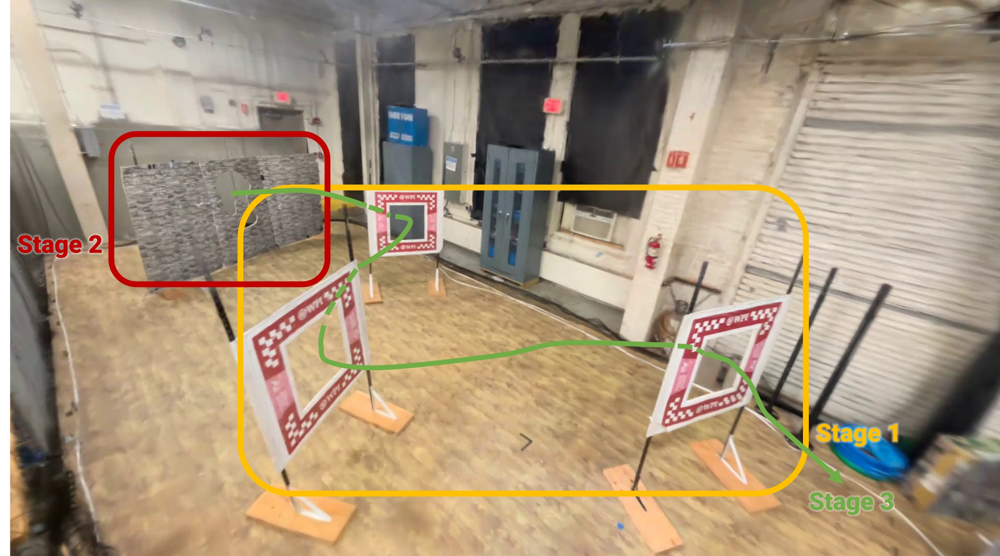
Autonomous Navigation through Windows — Optical Flow
Nov 2025 – Dec 2025
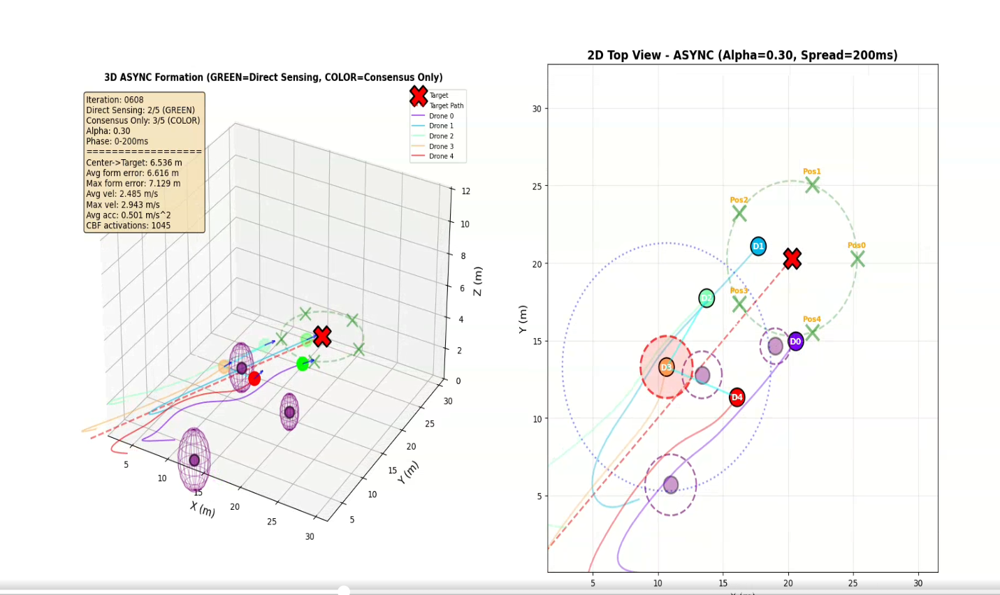
Async vs Sync Consensus — Multi-Agent Formation (GCBFs)
Aug 2025 – Dec 2025
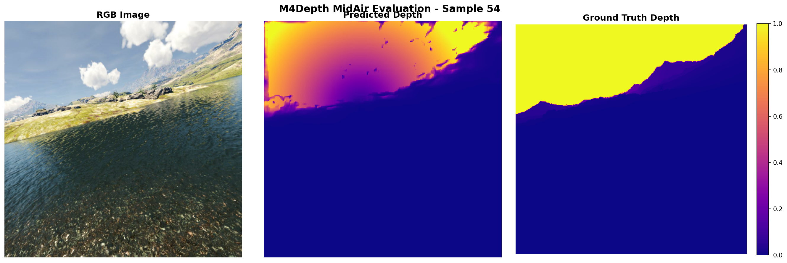
Monocular Depth Estimation with Transfer Learning
Nov 2025 – Dec 2025
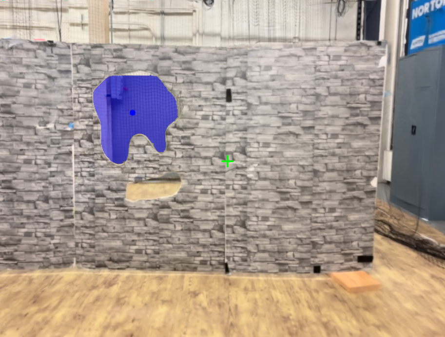
Optical Flow-Based Gap Detection and Navigation
Oct 2025 – Nov 2025
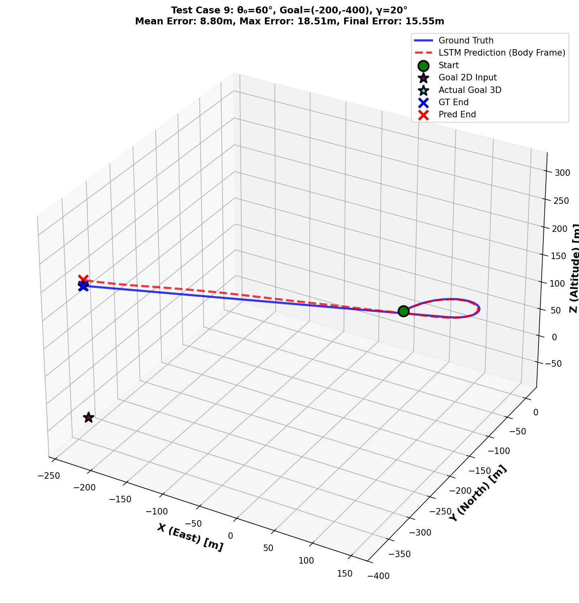
LSTM-Based 3D Dubins Trajectory Prediction
Oct 2025 – Nov 2025
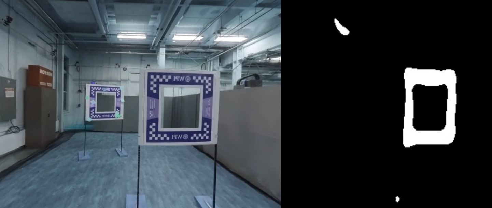
Deep Learning Window Detection for Drone Navigation
Sep 2025 – Oct 2025
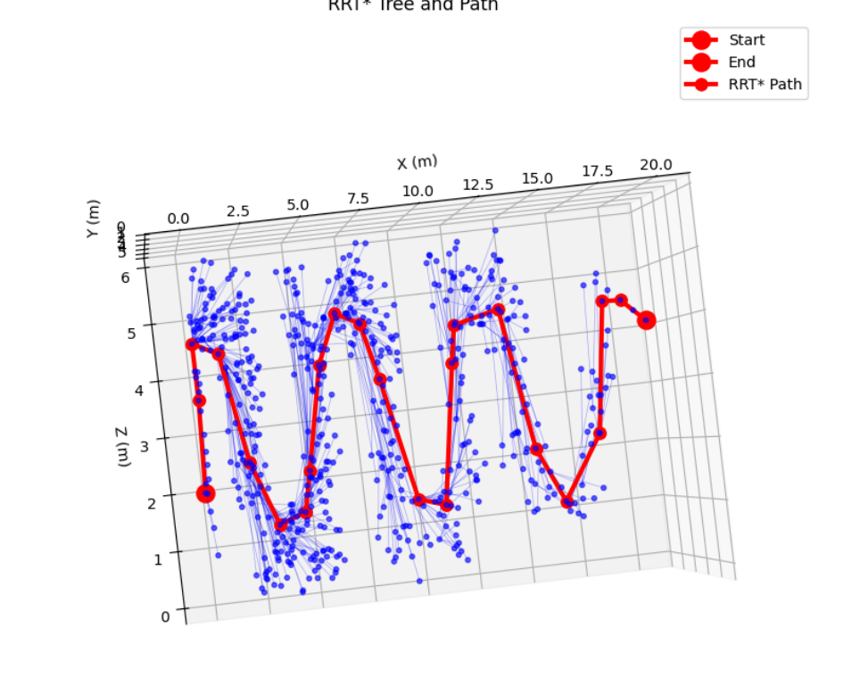
Quadrotor Path Planning & Trajectory Optimization
Sep 2025 – Oct 2025
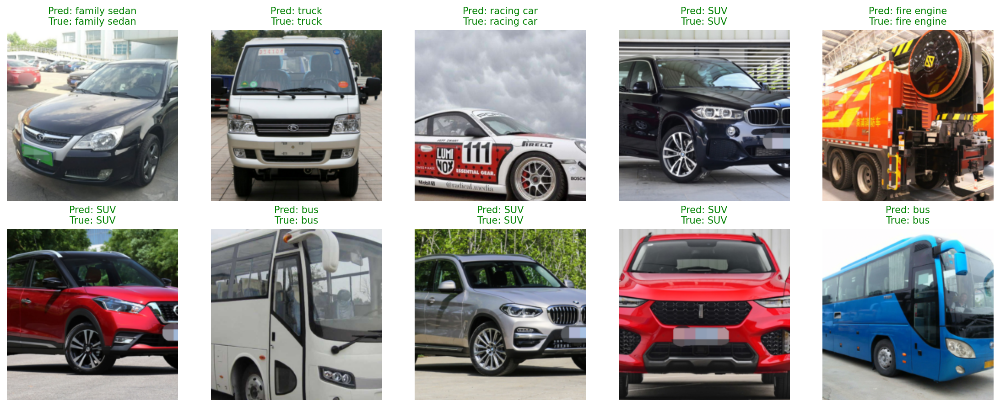
Vehicle Classification via ResNet18 Transfer Learning
Sep 2025 – Oct 2025
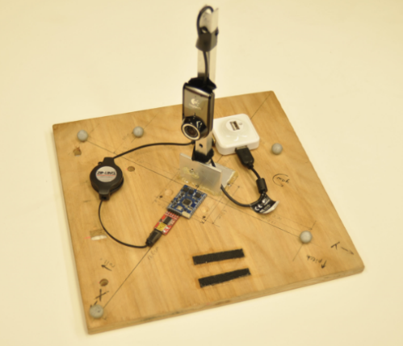
Unscented Kalman Filter for Attitude Estimation
Aug 2025 – Sep 2025
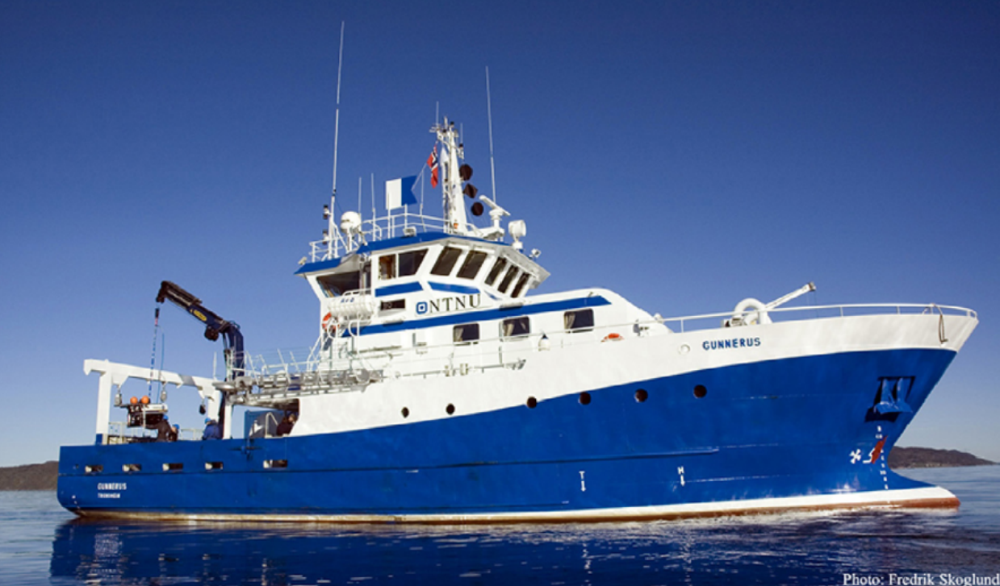
Neural Network Control Allocator for Ship Thrusters
Aug 2025 – Sep 2025
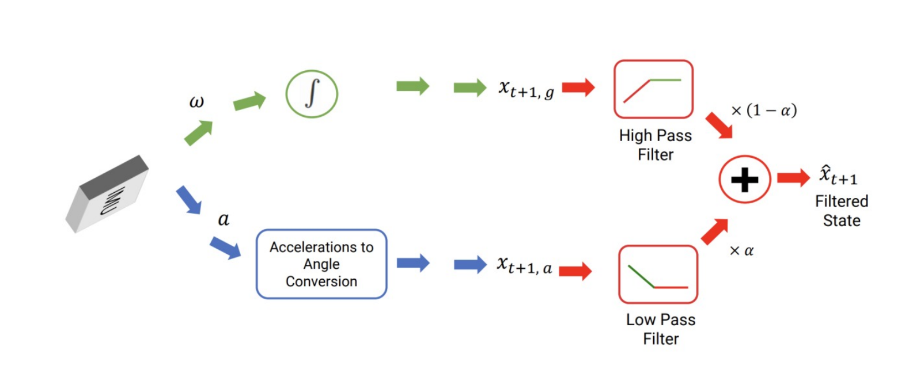
IMU Sensor Fusion for Orientation Tracking
Aug 2025
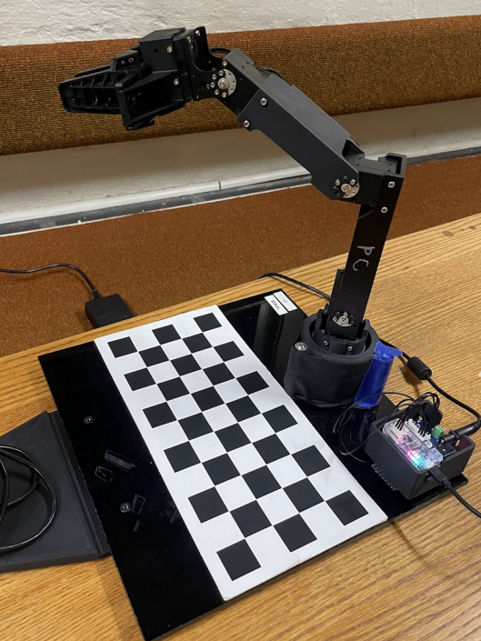
Control of 4-DoF OpenManipulatorX Robotic Arm
Nov 2024 – Dec 2024
Quadrotor Controller Implementation (CrazyFlie 2.0)
Nov 2024 – Dec 2024
Benchmarking Advanced IK Algorithms (Kinova Gen3)
Mar 2025 – May 2025
Chance-Constrained RRT Motion Planning (OMPL)
Mar 2025 – May 2025
Design and Testing of Robotic Dog (SPOT)
Jan 2024 – Mar 2024